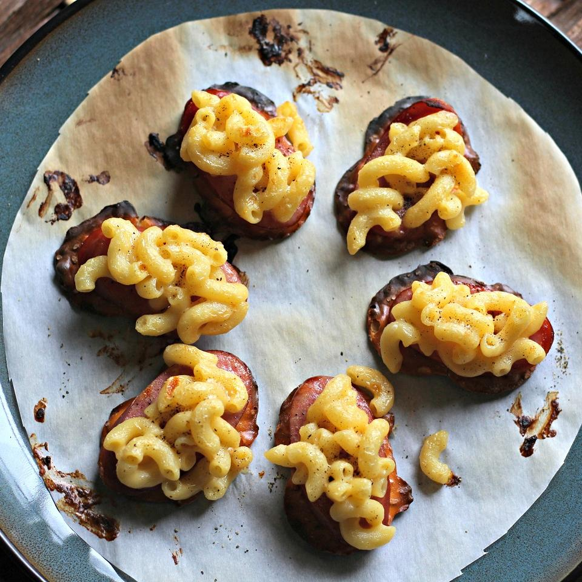

Mac and Cheese

Description
Delicious Mac and Cheese bites.
Ingredients
- 2 teaspoons butter
- 1 cup cooked macaroni
- 2 slices American cheese, diced
- 2 tablespoons milk
- 16 thin pretzel crackers (such as Snack Factory® Pretzel Crisps®)
- 1 (4 ounce) precooked smoked sausage, cut into sixteen 1/4-inch slices
- ground black pepper to taste
Steps
- "Melt butter in a saucepan over medium-low heat. Add macaroni and American cheese; stir until cheese is mostly melted, about 2 minutes. Reduce heat to low; mix in milk."
- "Set oven rack about 6 inches from the heat source and preheat the oven on the low broil setting. Line a baking sheet with parchment paper."
- "Spread pretzels crackers on the prepared baking sheet; top each with a slice of sausage. Spoon 1 tablespoon macaroni and cheese mixture over sausage. Sprinkle black pepper on top."
- "Bake under the preheated broiler until American cheese and pretzels start to brown, 1 to 2 minutes."